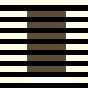
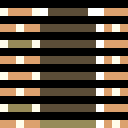

CathodeRetro::ScanlineType
enum class ScanlineType
{
Odd,
Even,
Progressive = Odd,
}
The type of mask to use for the CRT emulation.
To emulate an interlaced mode, the caller of
CathodeRetro::
should alternate between Odd and Even every other scanline.
For progressive modes, the caller should keep the same value. For this purpose, a
Progressive entry is also there - it's just an alias for Odd
but it can make it clearer at the call site that it is intentionally not alternating for
interlacing purposes.
Index
Values
- Odd
-
This frame is an "odd" frame, which means the input image contains the (1-based) odd scanlines of a frame (that is, the first scanline of the input image is the first scanline of the output, second input scanline is third output scanline, third input is fifth output, etc).
- Even
-
This frame is an "even" frame, which means the input image contains the (1-based) even scanlines of a frame (that is, the first scanline of the input image is the second scanline of the output, second input scanline is fourth output scanline, third input is sixth output, etc).
- Progressive
-
This is just an alias for
Odd, to make it clearer at call sites when using a progressive (non-interlaced) output.Rather than alternate every other frame between
EvenandOdd, non-interlaced drawing should keep a consistent one - and it seems that most consoles that ran interlaced at 240p used odd rather than even scanlines.